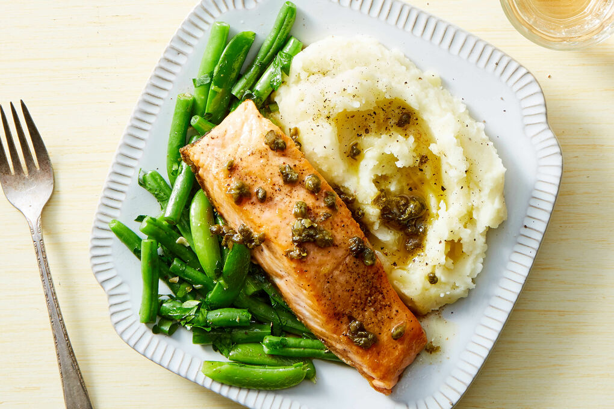

Pan-Seared Salmon with Mashed Potatoes and Vegetable Medley

This mouth-watering weekday dinner will have your friends and family complimenting you for days! Pan-Seared Salmon with Mashed Potatoes and a Vegetable Medley. Searing the Salmon will create a luxorious crispy skin whilst leaving the inside moist and tender. The mashed potatoes combine well to give the meal a buttery heart-warming edge and the seasonal vegetables leave you feeling like the epitome of health.
Ingredients
Mashed Potatoes
- 1kg Potatoes, preferably Jack Russets
- 250ml Milk
- 50g Butter, more to garnish
- Salt & Pepper
Vegetable Medley
- Seasonal Vegetables, e.g. Parsnip, Carrots
- A drizzle of Olive Oil
- Salt
Pan-Seared Salmon
- 6 salmon fillets with skin
- Sunflower Oil, or any other Oil with a high smoke point.
- Salt, Pepper & Lemon to taste
Method
Mashed Potatoes
- Peel the Potatoes and submerge them in water to slow down oxidation.
- Cut the Potatoes into roughly 2 inch sized cubes and fill a pan with lightly-salted water.
- Put the Potatoes in a pan and bring to a boil, then leave to simmer for 15-25 minutes. You'll know they're ready if you prod them with a knife and it slips off gently!
- Drain the potatoes thoroughly.
- Warm the Milk and melt the Butter in seperate saucepans and combine in to a large mixing bowl with the potatoes. Add seasoning as required.
- Mash well using a fork, or a potato masher until all ingredients are combined.
Vegetable Medley
- Pre-heat the Oven to 230 Degrees Celsius.
- Prep the Vegetables at hand by cutting in to small strips and chunks.
- Season well, add a drizzle of Olive Oil and toss thoroughly.
- Put Vegetables in the Oven, and allow to Roast for roughly 30 minutes.
Pan-Seared Salmon
- Add 2-3 tablespoons of Oil to coat the surface of the pan/skillet and then pre-heat until the oil shimmers and there is a light smoke emanating from the pan. (I prefer using a cast-iron skillet as it retains heat well!)
- Lay the Salmon Fillet skin-side-down away from you on a medium heat for 6 minutes.
- Gently pry the salmon side to side with tongs until it breaks free from the bottom of the pan and flip it over to cook for another 2-3 minutes. Internal temperature should reach ~130 Degrees Celsius.
- Repeat with remaining fillets and allow to rest on a wire rack whilst plating the other ingredients.